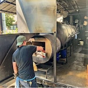

About Me

Hello! My name is Andrew Sabourin, and I am a student at Clark College in Vancouver, Washington. I love the outdoors and make a point to go out as much as possible within my busy schedule. Through exploring my interest in computer science has led me back to Clark with a more definitive goal for the degree I want to pursue. After Clark depending, where I am and my options, I may either continue towards a BA in cybersecurity or jump into the web dev job force. I am currently working as a pit master at The Smokin' Oak.
Jobs That Have Impacted Me
- Lifeguard and Water Safety Instructor
- Cabinetry
- Ironworking
- Retail/ Grocery
- Restaurant- Back of the House
Things I Can Nerd Out to...
- Philosophy
- When podcasting was fairly new Philosophize This! was one of my favorite podcasts. I have read and own multiple versions of meditations and other philosophy books.
- Culinary Arts
- Ever since I was little, I have always been fascinated by cooking and baking, I have been cooking and baking at home since I was able to operate an oven. After a while I decided to work at a restaurant started as a dishwasher and worked my through to pit master at a Texas style barbeque restaurant.
- Outdoors Activities
- I love to be outdoors, fly fishing, hiking, backpacking, foraging and many other activities. I have backpack all over the Gifford Pinchot National Forest and have been stuck on a ridge with a friend for 20+ hours.
- Anime
- It all started with Toonami on Cartoon Network with Inuyasha, dragon ball Z, and Mobile Suit Gundam Wing. Since then it has expanded to many great anime shows like One Piece and Black Clover.